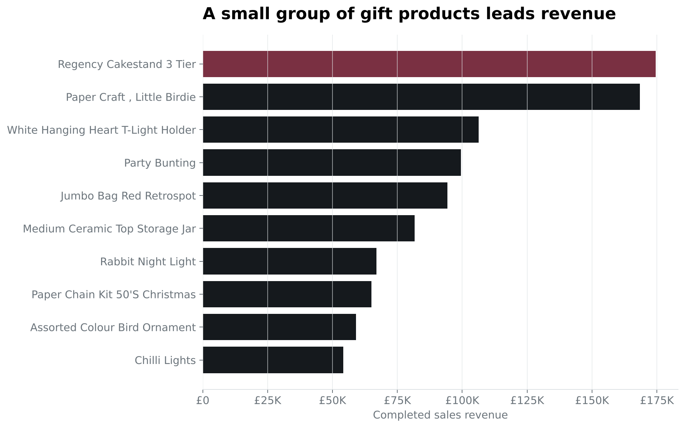
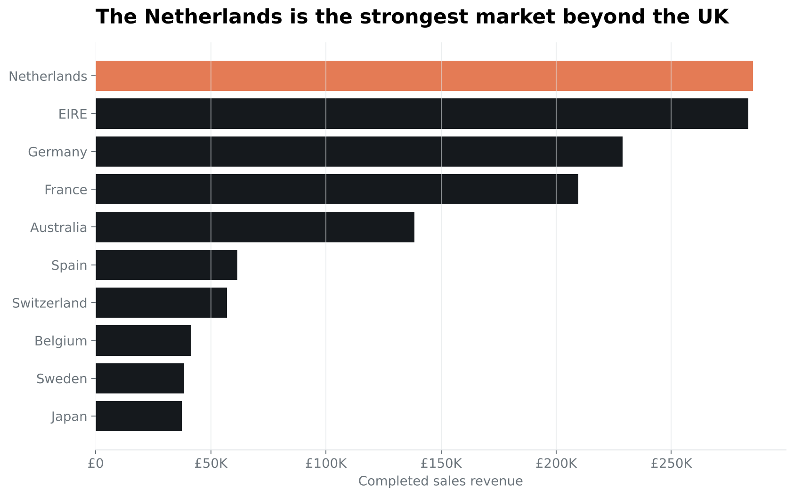
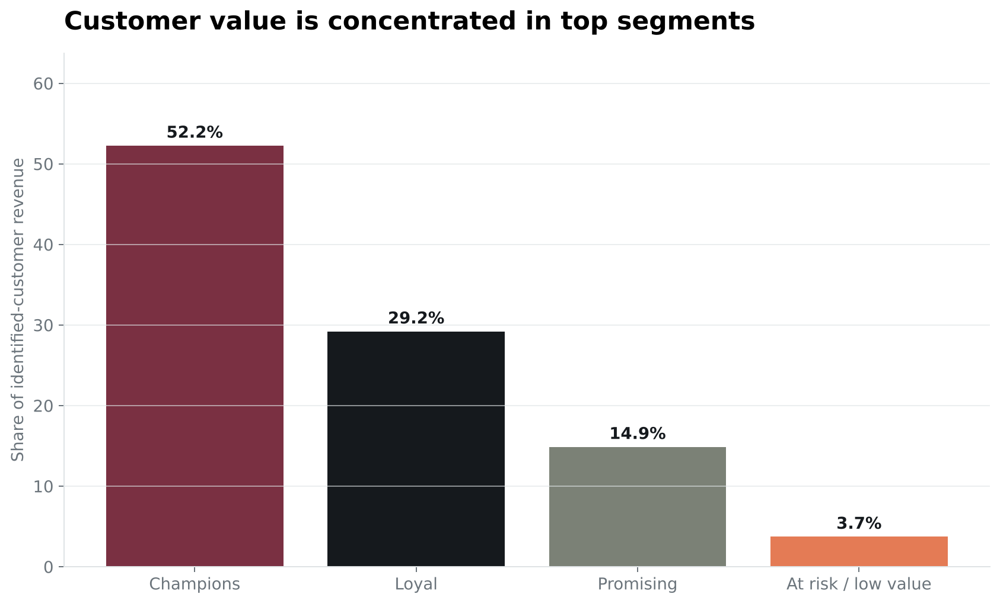

Seasonality
2011-11 was the strongest month at £1,509,496, highlighting the importance of holiday inventory and campaign readiness.
An independent analysis of 541,909 transaction records to identify revenue patterns, valuable customers, product leaders, and international growth opportunities.
The analysis evaluates completed sales from December 01, 2010 through December 09, 2011. Because the dataset contains selling prices but no product costs, the financial measure is revenue—not profit.
2011-11 was the strongest month at £1,509,496, highlighting the importance of holiday inventory and campaign readiness.
The UK generated 84.6% of completed-sales revenue. Outside the home market, Netherlands led with £285,446.
Regency Cakestand 3 Tier was the highest-revenue merchandise item at £174,485.
The top 434 customers in the Champions segment produced 52.2% of identified-customer revenue.
Monthly revenue rises into autumn and reaches its high point in November 2011. Operations and marketing should prepare for the surge before Q4 begins.

The leading products suggest a strong decorative-gift and homeware use case. High-revenue items deserve reliable stock coverage, but product concentration should be monitored.

The UK dominates the business, while the Netherlands, Ireland, Germany, France, and Australia provide a practical shortlist for targeted international testing.

An RFM-style segmentation ranks customers using recency, number of orders, and revenue. The result separates high-value Champions from promising and lower-value groups.

Set inventory, campaign, and fulfillment plans by late summer for the products that lead holiday revenue.
Use early access, replenishment reminders, and personalized offers for the highest-value customer segment.
Run small localized campaigns in the strongest non-UK markets before investing in broad expansion.
UCI Machine Learning Repository, Online Retail, DOI 10.24432/C5BW33. Licensed under CC BY 4.0. The original workbook, cleaned CSV, Python analysis, and charts are saved with this project.
Read the project notes and provenance